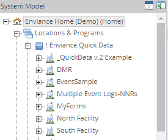
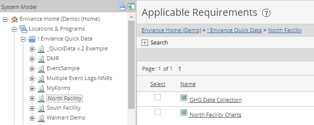
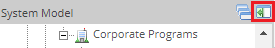

The System Model shows the organizational hierarchy of your system - the various facilities, departments or monitoring programs your system is set up to track, along with the requirements and data.
To access the System Model, select System Model from the menu.
The System Model and the associated library components are displayed shown in the left pane.
Locations & Programs contains the System Model, the organizational hierarchy of your system. The facilities, equipment you are monitoring, programs you are tracking, etc., are represented in a folder-style hierarchy.

The actual tracked obligations (requirements) related to each object in the System Model tree are shown in the right pane.

Citations, Documents, Reports and system Dashboards are also organized into folders. The following folder contents are displayed in the right pane, where you can view or edit components, enter data, set up or run reports, etc.
You can hide the System Model frame in order to expand the viewing area.
To hide or show the System Model, click the Close icon at the top right of the System Model pane. Click the icon again to show the frame.

You can also drag and drop the border between the two panes to resize the System Model pane. Your desired width of the System Model pane will be remembered when you next log in.
The parts of the System Model and the Requirements visible to you are those objects to which you have been granted permission. The System Model may include other objects to which you do not have permission. If you do not see items you need to work with, contact your system administrator.
If you have access to more than one customer System, your Home system (the one in which your user ID was created) will be displayed by default when you log in. You can change System Models by clicking on the system logo in the top left corner of the screen.
To switch to another system: